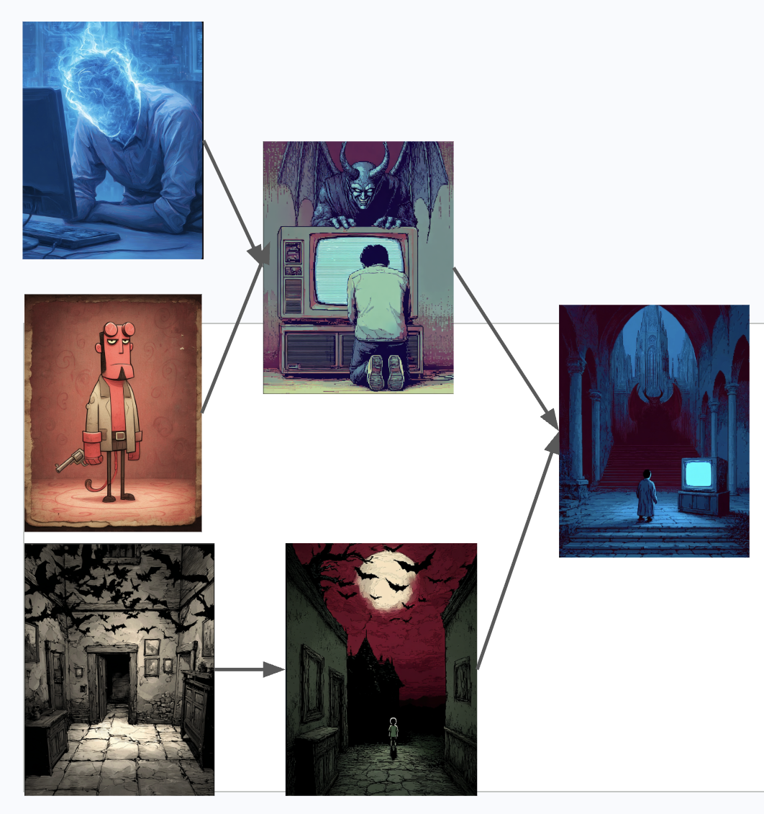
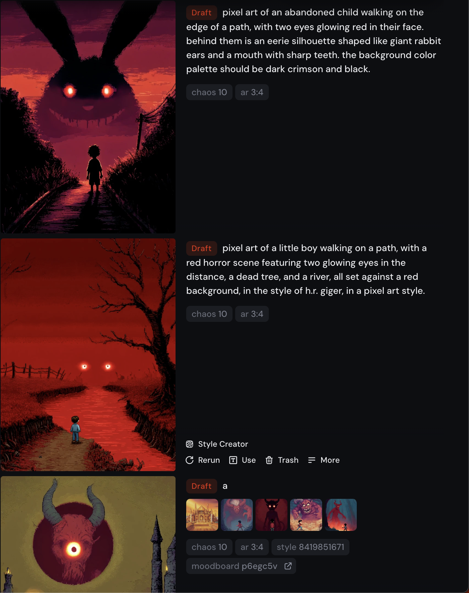

History of Creativity
“The History of Creativity”
As soon as I started playing around with Midjourney I realized I really wanted a “History of Creativity”.
For instance, imagine you just used Midjourney to make an image. What was the process to get there? Both from your side and from the machine’s side?
I think fully answering that question might t uncover some cool insights both about human creativity and machine creativity and how they interact.
For example, here is a mockup I made myself of how my images evolved:

Midjourney.
It started with an image representing how your energy all goes to your head when you’re at the computer, mixed together with a Hellboy cartoon (because why not?) generating a man praying in front of a screen, with a demon atop it.
From the other side I used one of the pixel art dreams images I had generated, playing around with changing the colors of the sky.
The unity of those two gave me the “final” generation: a gothic horror scenario but with a screen in there. (This was very generative, or enticing, for me and would end up being the motivating influence of ‘Blue Light’.)
As I scrolled through my Midjourney history it dawned on me: the thing I wanted already exists. And Midjourney has it. The history of how each of my prompts leads the machine to craft the next generation of images, yes, but also of how each of the machines’ images leadd me to the next generation of prompts.

Me and the machine — a loop.